1.1. Адміністратор є представником адміністрації сервера та відповідає за порядок і дотримання правил.
1.2. Адміністратор зобов'язаний діяти об'єктивно, спокійно та в інтересах сервера.
1.3. Адмін-статус не дає права на особисті привілеї.
2.1. Адміністратор зобов'язаний знати та дотримуватися правил сервера.
2.2. Адміністратор не має права порушувати правила лише через свій статус.
2.3. При зміні правил адміністратор зобов'язаний ознайомитися з оновленнями.
3.1. Адмін-команди використовуються лише за службової необхідності.
3.2. Заборонено використовувати права для розваги, тролінгу, помсти або отримання переваги.
3.3. Заборонено використовувати адміністративні можливості для допомоги собі, друзям чи знайомим.
3.4. Адміністратор використовує лише ті команди та можливості, які доступні його рівню.
4.1. Покарання повинно відповідати порушенню.
4.2. Заборонено карати гравців без достатніх підстав або доказів.
4.3. При серйозних покараннях адміністратор повинен вказати чітку причину.
4.4. Адміністратор не повинен розглядати власну скаргу або ситуацію, у якій він є стороною конфлікту.
5.1. Під час виконання адміністративних обов'язків адміністратор діє як NON-RP особа.
5.2. Адміністратор не повинен використовувати службову інформацію для переваги свого RP-персонажа.
5.3. Якщо адміністратор грає RP без використання адмін-можливостей — він діє як звичайний гравець.
6.1. Заборонені образи, провокації, токсичність та приниження гравців.
6.2. Адміністратор повинен спілкуватися коректно та не створювати конфліктів.
6.3. Особисті симпатії, знайомства чи конфлікти не повинні впливати на адміністративні рішення.
7.1. Заборонено розголошувати внутрішню інформацію адміністрації без дозволу керівництва.
7.2. Заборонено передавати стороннім особам службову інформацію, отриману під час виконання обов'язків.
8.1. Адміністратор несе відповідальність за зловживання своїми повноваженнями.
8.2. За порушення правил можуть застосовуватися: попередження, зниження посади, позбавлення адміністративних прав або зняття з посади.
8.3. У тяжких випадках адміністрація може застосувати додаткове покарання відповідно до правил сервера.
Адміністратор — це не привілей, а відповідальність.
Повноваження надаються для підтримки порядку, а не для особистої вигоди.
1.1. Загальні положення
RP (RolePlay) — рольова гра, у якій гравець поводиться відповідно до логіки свого персонажа, ситуації та навколишнього світу.
Під час гри кожен гравець повинен намагатися створювати реалістичні та логічні RP-ситуації, враховувати дії інших учасників і не використовувати ігрові можливості для отримання несправедливої переваги.
NonRP — будь-які дії, поведінка або рішення, які суперечать логіці рольової гри, є нереалістичними або навмисно руйнують RP-ситуацію.
1.2. Основні RP-порушення
До NonRP та інших порушень рольової гри належать, зокрема:
🔹 Нереалістична поведінка
Заборонено поводитися так, як персонаж не поводився б у реальному житті або в логічній RP-ситуації.
Приклади: втеча від поліції персонажем, який не має нічого протизаконного та тікає просто «тому що хочеться»; безпричинний напад на інших гравців; стрибки з великої висоти без будь-якої реакції персонажа; навмисне потрапляння під автомобілі або провокування аварій; ігнорування серйозних травм; продовження активного бою після очевидно важкого поранення; використання транспорту або предметів абсолютно нелогічним способом; навмисне створення хаосу без RP-причини.
🔹 DM / RDM — безпричинні напади
DM (DeathMatch) — напад, завдання шкоди або використання зброї проти іншого гравця без достатньої RP-причини.
RDM (Random DeathMatch) — хаотичні або масові безпричинні напади на гравців.
Напад повинен мати логічну причину в межах RP-ситуації. Особиста неприязнь поза грою, бажання «постріляти» або просто розвага не є RP-причиною.
Приклади порушень: стріляти в випадкових людей; нападати на гравця без будь-якої RP-взаємодії; вбивати або атакувати гравців «для розваги»; навмисно в'їжджати автомобілем у людей з метою завдати шкоди без RP-причини.
🔹 MG (MetaGaming)
MG (MetaGaming) — використання інформації, отриманої поза грою, у RP-ситуації.
Заборонено використовувати інформацію з Telegram, Discord, голосових чатів або інших зовнішніх джерел, якщо ваш персонаж не міг отримати цю інформацію RP-шляхом.
Приклад: ви побачили в Telegram місцезнаходження гравця та одразу приїхали туди в грі, хоча ваш персонаж не міг знати, де він знаходиться.
🔹 PG (PowerGaming)
PG (PowerGaming) — виконання нереалістичних дій або нав'язування іншому гравцю результату RP-ситуації.
Заборонено робити свого персонажа «непереможним», примушувати інших приймати ваш результат або виконувати дії, які фізично чи логічно неможливі.
Приклади: самостійно вирішувати результат дії за іншого гравця; писати через RP-команди, що інший персонаж уже зробив щось без можливості відповісти; виконувати нереалістичні фізичні дії; ігнорувати очевидні обмеження персонажа.
🔹 FearRP
FearRP — відсутність страху за життя та безпеку свого персонажа. Персонаж повинен адекватно реагувати на небезпеку.
Приклади порушення: сміятися або провокувати озброєну людину, коли ваше життя реально під загрозою; безпричинно кидатися на кількох озброєних осіб; ігнорувати накази під реальною загрозою життю без логічної RP-причини.
Водночас кожна ситуація розглядається окремо, з урахуванням обставин та можливостей персонажа.
🔹 Combat Log
Combat Log — навмисний вихід із гри для уникнення наслідків активної RP-ситуації.
Заборонено виходити з гри під час: затримання; переслідування; активного бою; допиту; арешту; іншої незавершеної RP-ситуації.
Якщо вихід стався через технічні причини, гравець повинен за можливості повернутися та продовжити ситуацію.
🔹 RK (Revenge Kill)
RK (Revenge Kill) — помста іншому гравцю після смерті або відродження персонажа без нової RP-причини.
Не можна одразу після відродження повертатися до місця конфлікту лише для того, щоб помститися.
🔹 Cuff Rush
Cuff Rush — миттєве використання наручників або інших засобів затримання без нормальної RP-взаємодії та можливості адекватно відіграти ситуацію.
Затримання повинно відбуватися логічно та відповідно до обставин.
🔹 Abuse ігрової механіки
Заборонено використовувати особливості, баги або механіки гри для отримання несправедливої переваги або зриву RP.
До цього можуть належати: навмисне використання багів; використання механік для уникнення затримання; спам діями або командами; навмисне використання анімацій для отримання переваги; використання можливостей гри всупереч логіці ситуації.
1.3. RP-команди
Команди /me та /do використовуються для опису дій, стану персонажа або ситуації, які неможливо повністю показати через ігрову механіку.
Заборонено: використовувати команди для обману інших гравців; нав'язувати результат дії іншому персонажу; описувати неможливі або нереалістичні дії; створювати неправдиву інформацію для отримання переваги; використовувати RP-команди як спосіб уникнути наслідків ситуації.
Приклад неправильного використання: /do Усі документи зникли. — якщо для цього немає логічної RP-причини.
1.4. Загальна відповідальність за RP
Неможливо передбачити абсолютно всі можливі порушення рольової гри.
Якщо дія прямо не зазначена в правилах, але очевидно суперечить логіці RP, є нереалістичною, навмисно руйнує ситуацію або дає несправедливу перевагу, адміністрація має право розцінити її як NonRP або інше RP-порушення.
При розгляді ситуації враховуються: обставини події; дії всіх учасників; наявність RP-причини; ступінь порушення; навмисність дій; попередні порушення гравця.
1.5. Покарання
За порушення правил RP адміністрація може застосувати: усне попередження; офіційне попередження; депорт; тимчасовий бан; інше покарання відповідно до тяжкості порушення.
DM — бан від 2 діб.
RDM — бан від 5 діб.
За тяжкі, масові або повторні RP-порушення адміністрація має право збільшити термін покарання.
2.1. Носіння зброї у публічних місцях
Заборонено відкрито носити або демонструвати зброю у людних/публічних місцях.
Покарання: тюремний строк.
2.2. Нелегальне володіння зброєю
Заборонено зберігати, носити, передавати або використовувати зброю без відповідної ліцензії.
Покарання: тюремний строк та конфіскація зброї.
2.3. Неправомірне використання зброї
Заборонено стріляти, нападати на інших гравців, стріляти в повітря або використовувати зброю для залякування.
Покарання: тюремний строк та можливий штраф до 8 000€.
«Масове або хаотичне використання зброї без RP-причини додатково розглядається як RDM.»
Покарання: конфіскація зброї, штраф до 16 000€ або депорт до 3 діб.
2.4. Передача зброї
Заборонено передавати, продавати зброю іншим гравцям.
Покарання: конфіскація зброї, тюремний строк.
2.5. Зброя у зелених та безпечних зонах
Заборонено діставати, демонструвати або використовувати зброю у зелених/безпечних зонах без обґрунтованої RP-причини.
Покарання: депорт до 3 діб. У випадку стрільби або масового порушення додатково може застосовуватися покарання за DM/RDM.
2.6. Вибухові засоби
Заборонено використовувати вибухові засоби без RP-причини, у зелених зонах або для навмисного зриву RP-ситуацій.
Покарання: тюремний строк, конфіскація. Масове використання вибухівки може каратися баном до 7 діб.
3.1. Пограбування дозволені лише тих об'єктів, які передбачені механікою.
3.2. Заборонено нападати, грабувати або викрадати гравців без RP-причини.
3.3. Заборонено навмисно допомагати іншому гравцю уникати покарання, якщо така допомога порушує правила сервера.
3.4. Заборонено навмисно провокувати інших гравців на порушення правил.
4.1. Правоохоронці зобов'язані діяти в межах своїх повноважень та RP-логіки.
4.2. Заборонено безпідставно затримувати, штрафувати, обшукувати або застосовувати силу до гравців. Покарання: бан до 5 діб.
4.3. Заборонено безпідставно використовувати зброю, тазер, наручники та шипи. Покарання: бан до 4 діб або штраф 16к.
4.4. Перед застосуванням сили повинна існувати відповідна RP-причина.
4.5. Правоохоронець під час взаємодії з гравцем перш за все повинен представитися та повідомити своє звання. Порушення карається штрафом 8к/варном.
4.6. Заборонено використовувати службові повноваження для особистої вигоди. Покарання: депорт до 3 діб.
4.7. Інформація про розшук, особу або транспорт повинна отримуватися через доступні RP-способи (перевірка документів, пробиття номера) з RP-відіграшем. Використання інформації з OOC-джерел у RP вважається MG.
4.8. Незатверджені працівники правоохоронних органів не мають права використовувати службові повноваження, доступні лише офіційним співробітникам.
5.1. КПП та блокпости дозволені лише у відповідних місцях та за наявності RP-причини.
5.2. Заборонено повністю блокувати дороги, мости, лікарні та інші важливі об'єкти без необхідності.
5.3. Екстреним службам повинен залишатися вільний проїзд.
5.4. Гравці повинні виконувати законні вимоги правоохоронців під час перевірки.
5.5. Безпідставне використання шипів заборонене.
6.1. Заборонено навмисно використовувати транспорт для DM, RDM або зриву RP.
6.2. Заборонено навмисно таранити гравців або транспорт без RP-причини.
6.3. Заборонено використовувати адміністративний транспорт у звичайних RP-ситуаціях.
6.4. Заборонено використовувати номерні знаки з назвами адміністрації/державних структур або образливими написами.
7.1. Заборонені образи, булінг, погрози, дискримінація та навмисна токсична поведінка.
7.2. Заборонено навмисно зривати RP-ситуації, івенти або роботу інших гравців.
7.3. Заборонено створювати масові конфлікти або організовувати масові порушення правил.
7.4. Заборонено навмисно заважати роботі поліції, медиків, пожежників та інших служб без RP-причини.
7.5. У голосовому чаті заборонені образи, крики, навмисно дратівливі звуки та спам.
8.1. Заборонено використовувати чити, експлойти або стороннє програмне забезпечення для отримання переваги. Покарання: перманентний бан.
8.2. Заборонено навмисно використовувати баги та помилки сервера для отримання переваги. Покарання: бан від 7 діб до перманентного.
8.3. Заборонено передавати іншим гравцям інформацію або способи використання багів для отримання переваги.
8.4. Заборонено уникати покарання шляхом виходу із сервера, зміни акаунта або іншими способами.
9.1. Рішення адміністрації є обов'язковими під час розгляду порушень.
9.2. Заборонено сперечатися з адміністрацією під час розгляду ситуації. Оскарження здійснюється після завершення ситуації.
9.3. Заборонено навмисно приховувати порушення або вводити адміністрацію в оману.
9.4. Адміністраторам заборонено використовувати службові повноваження для особистої вигоди.
9.5. Адміністрація має право застосувати суворіше покарання у випадку масових, повторних або особливо грубих порушень.
10.1. Гравці повинні дотримуватися здорового глузду та підтримувати RP-атмосферу сервера.
10.2. Якщо ситуація прямо не описана в правилах, адміністрація оцінює її відповідно до логіки RP та загального духу правил.
10.3. Навмисний обхід правил не звільняє від відповідальності.
10.4. Повторне порушення одного або декількох правил може призвести до збільшення покарання.
10.5. У разі масового порушення правил адміністрація має право тимчасово обмежити участь порушників у RP або видати бан.
На сервері забороняється будь-яка пропаганда, підтримка або поширення ідеологій та символіки, що пропагують агресію, ненависть, насильство або тоталітарні режими.
Заборонено:
— пропагувати або підтримувати російську агресію та російську пропаганду;
— виправдовувати або підтримувати дії держави-агресора;
— використовувати символіку, пов'язану з підтримкою російської агресії;
— пропагувати нацизм, фашизм та інші тоталітарні ідеології;
— використовувати нацистську символіку, жести, знаки або інші матеріали з метою пропаганди;
— поширювати матеріали, що містять пропаганду ненависті або заклики до насильства.
Покарання: безстрокова депортація.
12.1. Проїзд на заборонний сигнал — автоштраф 100€ (систематично: до 3000€).
12.2. Перевищення швидкості — штраф 3000€.
12.3. Небезпечне керування — штраф 4000€ або попередження.
12.4. Рух зустрічною смугою — штраф 3000€ або попередження.
12.5. Порушення правил обгону — штраф 3000€ або попередження.
12.6. Порушення правил кругового руху — штраф 3000€ або попередження.
12.7. Неправильний поворот — штраф 2000€ або попередження.
12.8. Неправильне розташування після повороту — штраф 2000€ або попередження.
12.9. Невикористання поворотників — штраф 1500€ або попередження.
12.10. Недотримання дистанції — штраф 2000€ або попередження.
12.11. Порушення правил залізничного переїзду — штраф 3000€ або попередження.
12.12. Ненадання переваги пішоходам — штраф 3000€ або попередження.
12.13. Рух у заборонених зонах (тротуари, газони) — штраф 3000€ або попередження.
12.14. Рух заднім ходом у небезпечних місцях — штраф 3000€ або попередження.
12.15. Заборонений дрифт на дорогах — штраф 6000€ або попередження.
12.16. Безпідставний звуковий сигнал — штраф 4000€ або попередження.
12.17. Невикористання фар (з 16:00 до 06:00 / за містом) — штраф 2000€ або попередження.
12.18. Заборонене паркування — штраф 3000€ або попередження.
12.19. Небезпечний розворот — штраф 2000€ або попередження.
12.20. Неправильна вимушена зупинка — штраф 2000€ або попередження.
12.21. Рух на несправному транспорті — штраф 4000€ або попередження.
12.22. Посадка/висадка пасажирів у заборонених місцях — штраф 3000€ або попередження.
12.23. Ненадання переваги громадському транспорту — штраф 4000€ або депорт до 1 доби.
12.24. Перешкоджання спецтранспорту — штраф 6000€ або депорт до 2 діб.
12.25. Рух у колоні спецтранспорту — штраф 6000€ або попередження.
12.26. Невиконання сигналів регулювальника — штраф 6000€ або депорт до 1 доби.
12.27. Недозволений в'їзд на територію установ — штраф 6000€.
12.28. ДТП та залишення місця пригоди — штраф 4000€ або попередження + компенсація збитків.
12.29. Порушення правил переходу дороги пішоходом — штраф 2000€ або попередження.
12.30. Заборонені номерні знаки — штраф 6000€ або попередження.
12.31. Приховування номерного знака — штраф 6000€ або попередження.
Зелені зони — це місця, де гравці можуть перебувати без ризику безпідставних нападів, перестрілок та інших конфліктних ситуацій (Лікарня, Поліцейська дільниця, Суд).
Порушення правил зеленої зони карається депортом до 5 діб.
Зовнішній вигляд персонажа має відповідати правилам сервера та не порушувати атмосферу RolePlay.
Заборонено:
— Використовувати скіни із фашистською, нацистською, російською військовою або іншою забороненою пропагандистською символікою.
— Використовувати образи, які можуть містити образливу, провокаційну або пропагандистську символіку.
— Використовувати скіни тварин або інші нестандартні образи під час виконання обов'язків у державних фракціях.
Скіни тварин та аніматори:
Якщо гравець використовує скін тварини, він зобов'язаний відповідно до нього відігравати персонажа. Такий гравець не може: перебувати у розшуку; вступати до державних фракцій; виконувати службові обов'язки; використовувати такий скін для участі у фракційній діяльності.
Це правило також поширюється на аніматорів тварин. Навіть якщо гравець використовує аніматора, який візуально перетворює персонажа на тварину, обмеження залишаються чинними. Після зміни на звичайний скін гравець може повернутися до стандартної RolePlay-діяльності.
Покарання: за порушення правил зовнішнього вигляду та використання заборонених скінів — депорт до 5 діб.
RP — це не максимальна реалістичність. Це адекватна рольова поведінка в межах механіки сервера.
Головний принцип Legacy RP:
«Не шукай лазівку в правилах — грай адекватно та не псуй гру іншим.»
Зелені зони — це місця, де гравці можуть перебувати без ризику безпідставних нападів, перестрілок та інших конфліктних ситуацій.
До зелених зон на сервері належать:
Територія зеленої зони охоплює саму будівлю та прилеглу до неї територію, позначену на карті.
— Перебувати гравцю, який знаходиться в розшуку, без обґрунтованої RP-причини.
— Діставати, демонструвати чи використовувати зброю.
— Влаштовувати бійки, провокувати інших гравців або навмисно створювати конфліктні ситуації.
— Здійснювати злочинні дії або використовувати зелену зону як місце для втечі чи переховування від правоохоронців.
— Стріляти або будь-яким іншим способом проявляти агресію щодо інших гравців.
Перебування в зеленій зоні допускається, якщо гравець:
— має законну ліцензію на зброю;
— був затриманий та перебуває під арештом;
— отримує медичну допомогу;
— щойно з'явився на сервері.
Після появи на сервері гравцю надається до 1 хвилини, щоб залишити зелену зону, якщо для його перебування немає іншої законної причини.
Правоохоронці не мають права безпідставно затримувати або перевіряти гравців лише через їхнє перебування в зеленій зоні.
Затримання можливе, якщо:
— гравець безпосередньо в зеленій зоні порушує правила або вчиняє правопорушення;
— на гравця офіційно оголошено розшук та є відповідна RP-причина для його затримання.
Якщо гравець перебуває в зеленій зоні для отримання медичної допомоги, правоохоронці повинні дочекатися його виходу із зони, якщо ситуація не становить безпосередньої загрози.
Перевірка особи за Username допускається лише за наявності обґрунтованої RP-причини.
Використання зброї в зеленій зоні заборонене навіть за наявності відповідної ліцензії.
Якщо гравець використав зброю в зеленій зоні та мав ліцензію, до нього застосовується:
— конфіскація зброї;
— штраф 8 000€.
Основне порушення правил зеленої зони: тимчасовий депорт до 5 діб.
Перебування в зеленій зоні під час розшуку: попередження або депорт до 2 діб залежно від ситуації.
«Приклад порушення: гравець дістає зброю біля лікарні, погрожує іншому гравцю та провокує конфлікт.»
«Правильна поведінка: у зеленій зоні дотримуйтесь спокою, не провокуйте інших та не використовуйте зброю без дозволеної RP-причини.»
Стаття 1. Основи сервера
1. LEGACY RP — RolePlay-сервер, на якому основою взаємодії між гравцями є дотримання правил, законів та RolePlay-атмосфери.
2. Конституція є основним нормативним документом сервера та має найвищу юридичну силу серед внутрішніх нормативних актів.
3. Усі правила, кодекси та нормативні документи сервера не можуть суперечити Конституції.
4. Незнання положень Конституції не звільняє гравця від відповідальності за їх порушення.
Стаття 2. Державна мова
1. Основною мовою сервера є українська мова.
2. Державні органи, офіційні документи, нормативні акти та службова комунікація повинні вестися українською мовою.
3. Використання інших мов у неофіційному спілкуванні між гравцями не забороняється, якщо це не порушує правила сервера.
Стаття 3. Рівність
1. Усі гравці мають рівні права та свободи незалежно від їхнього статусу, фракції, посади, рівня чи інших обставин.
2. Забороняється дискримінація, переслідування або приниження гравців.
3. Посада або високий ранг не дають права порушувати Конституцію чи правила сервера.
Стаття 4. Основні права
Кожен гравець має право на:
1. Безпечну участь у грі.
2. Свободу слова в межах правил сервера.
3. Захист від необґрунтованого переслідування.
4. Отримання інформації про причину застосованих до нього заходів.
5. Оскарження дій інших гравців, представників фракцій та адміністрації у встановленому порядку.
6. Справедливий розгляд скарг та звернень.
7. Вільний вибір дозволеної діяльності та фракції.
Стаття 5. Недоторканність гравця
1. Ніхто не може безпідставно переслідувати, затримувати або карати гравця.
2. Будь-які обмеження прав повинні мати відповідну RP-причину або передбачатися правилами сервера.
3. Забороняється використовувати службове становище для особистої вигоди або помсти.
Стаття 6. Причина затримання
1. Затриманий має право знати причину свого затримання.
2. Представник правоохоронного органу зобов'язаний повідомити причину затримання.
3. Причина повинна бути пов'язана з конкретним правопорушенням або іншою законною підставою для затримання.
Стаття 7. Права та обов'язки затриманого
1. Затриманий має право знати свої права та обов'язки.
2. На вимогу затриманого працівник правоохоронного органу повинен повідомити йому його права та обов'язки.
3. Затриманий зобов'язаний виконувати законні вимоги правоохоронців та не чинити опір затриманню.
4. Забороняється навмисно приховувати від затриманого інформацію про його права та підстави затримання.
Стаття 8. Законність діяльності державних органів
1. Державні фракції здійснюють свою діяльність відповідно до Конституції, кодексів, правил та інших нормативних документів сервера.
2. Представники державних органів зобов'язані діяти в межах своїх повноважень.
3. Забороняється перевищувати службові повноваження або використовувати посаду всупереч інтересам сервера.
4. Наказ керівника не може бути підставою для порушення Конституції або правил сервера.
Стаття 9. Правоохоронні органи
1. Правоохоронні органи відповідають за підтримання порядку та забезпечення дотримання законів сервера.
2. Застосування сили, затримання та інші заходи повинні мати законну або обґрунтовану RP-підставу.
3. Працівникам правоохоронних органів заборонено безпідставно переслідувати громадян або використовувати службові повноваження у власних цілях.
Стаття 10. Суд
1. Суд здійснює розгляд справ відповідно до Конституції та законодавства сервера.
2. Рішення суду повинні ґрунтуватися на наявних доказах та чинних нормативних документах.
3. Учасники судового процесу мають право на справедливий розгляд справи.
4. Забороняється навмисно перешкоджати роботі суду або впливати на суддю з метою отримання незаконного рішення.
Стаття 11. Найвища адміністративна влада
1. Власник LEGACY RP є найвищою посадовою особою сервера.
2. Власник має остаточне право приймати рішення щодо функціонування сервера.
3. Власник має право:
— затверджувати, змінювати або скасовувати правила сервера;
— створювати та ліквідовувати фракції й організації;
— призначати або звільняти керівників державних та інших структур;
— змінювати систему покарань та повноважень;
— втручатися в роботу державних органів у разі необхідності;
— приймати остаточні рішення у спірних ситуаціях;
— застосовувати адміністративні заходи для забезпечення стабільної роботи сервера.
4. Рішення власника є остаточним у межах адміністративної системи сервера.
5. Власник може вносити зміни до Конституції, правил та інших нормативних документів.
Стаття 12. Адміністрація сервера
1. Адміністрація діє в межах наданих їй повноважень.
2. Адміністратори мають право втручатися у ситуації, які порушують правила сервера або загрожують його нормальному функціонуванню.
3. Адміністрація має право застосовувати покарання відповідно до правил сервера.
4. У виняткових випадках адміністрація може застосувати інше покарання, якщо стандартна санкція не відповідає тяжкості порушення.
Стаття 13. Основні обов'язки
Кожен гравець зобов'язаний:
1. Дотримуватися Конституції та правил сервера.
2. Поважати інших учасників спільноти.
3. Дотримуватися встановлених законів та нормативних документів.
4. Виконувати законні вимоги представників державних органів.
5. Не використовувати баги, стороннє програмне забезпечення або інші заборонені засоби для отримання переваги.
6. Не перешкоджати нормальній грі інших учасників.
7. Дотримуватися встановлених RolePlay-правил.
Стаття 14. Внесення змін
1. Конституція може бути змінена або доповнена рішенням власника сервера.
2. За необхідності власник може делегувати підготовку змін адміністрації або уповноваженим особам.
3. Нова редакція Конституції набуває чинності після її офіційного опублікування.
4. Окремі положення Конституції можуть бути змінені без повного перегляду документа.
Стаття 15. Порушення Конституції
1. Порушення Конституції є порушенням основних правил сервера.
2. Відповідальність визначається з урахуванням характеру, тяжкості та наслідків порушення.
3. Якщо за конкретне порушення передбачене покарання відповідним кодексом або правилами сервера, застосовується покарання, передбачене цим нормативним документом.
4. Якщо окреме покарання не передбачене, адміністрація має право визначити санкцію самостійно залежно від обставин.
5. За порушення Конституції можуть застосовуватися: попередження, дисциплінарне стягнення, зняття з посади, позбавлення доступу до певних повноважень, тимчасовий депорт, інше адміністративне покарання відповідно до тяжкості порушення.
6. У випадку грубого або навмисного порушення Конституції адміністрація має право застосувати депорт до 5 діб, якщо інше покарання не передбачене відповідними правилами.
7. Державний службовець, який порушив Конституцію під час виконання службових обов'язків, додатково може бути позбавлений посади.
Стаття 16. Принцип відповідальності
Жоден гравець, незалежно від посади, рангу або статусу, не звільняється від відповідальності за порушення Конституції та правил сервера.
Стаття 1.1. Незаконне заволодіння коштами з каси АЗС — тюрма.
Стаття 1.2. Пограбування каси магазину — тюрма.
Стаття 1.3. Крадіжка майна або коштів із торгового автомата — тюрма.
Стаття 1.4. Незаконне проникнення до банківського сховища з метою пограбування — тюрма.
Стаття 1.5. Пограбування вантажного контейнера — тюрма.
Стаття 1.6. Незаконне заволодіння вмістом сейфа — тюрма.
Стаття 1.7. Крадіжка майна з ювелірного магазину — тюрма.
Стаття 1.8. Пограбування громадянина — тюрма та повернення викраденого майна.
Стаття 2.1. Умисне позбавлення життя громадянина (вогнепальна зброя) — тюрма.
Стаття 2.2. Умисне позбавлення життя правоохоронця (вогнепальна зброя) — тюрма.
Стаття 2.3. Умисне позбавлення життя громадянина (холодна зброя) — тюрма.
Стаття 2.4. Умисне позбавлення життя правоохоронця (холодна зброя) — тюрма.
Стаття 2.5. Умисне позбавлення життя без зброї — тюрма.
Стаття 2.6. Умисне позбавлення життя правоохоронця без зброї — тюрма.
Стаття 2.7. Збройний напад на громадянина — тюрма.
Стаття 2.8. Збройний напад на правоохоронця — тюрма.
Стаття 2.9. Фізичний напад на громадянина без зброї — штраф 1000€–3000€ або тюрма.
Стаття 2.10. Фізичний напад на правоохоронця без зброї — штраф 2000€–5000€ або тюрма.
Стаття 3.1. Завдання шкоди ТЗ внаслідок ДТП — компенсація 1000€–3000€.
Стаття 3.2. Умисне пошкодження приватного майна — штраф 1000€–4000€ або тюрма.
Стаття 3.3. Пошкодження державного майна — штраф 1000€–4000€.
Стаття 3.4. Умисне знищення майна — компенсація збитків та тюрма.
Стаття 4.1. Спроба уникнути затримання — штраф 1000€–3000€ або тюрма.
Стаття 4.2. Втеча на транспортному засобі — тюрма.
Стаття 4.3. Ігнорування законних вимог правоохоронця — штраф 1000€–3000€ або тюрма.
Стаття 4.4. Опір працівнику правоохоронного органу — тюрма.
Стаття 4.5. Використання відмичок — штраф 1500€–3000€ або тюрма.
ККЛ — Кримінальний кодекс LEGACY RP
Незнання Кодексу не звільняє громадянина від відповідальності.
Введіть нік гравця для швидкої перевірки
Натисніть на будь-яку фракцію або організацію, щоб відкрити її повний регламент, опис та склад:
Legacy RP — це сервер у стилі light rp з акцентом на якісний геймплей і комфортну атмосферу.

🇺🇦 ПРАВИЛА LEGACY RP🍪 Цей сайт використовує cookies для покращення роботи. Продовжуючи користуватися сайтом, ви погоджуєтесь з цим.